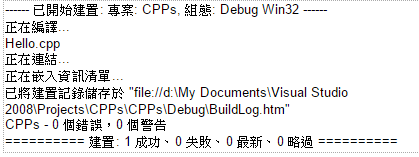
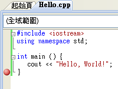
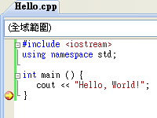
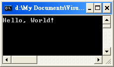
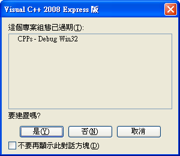
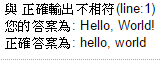

<!DOCTYPE HTML PUBLIC "-//W3C//DTD HTML 4.01 Transitional//EN"><html></html><head><meta charset="UTF-8"/><meta content="text/html; charset=UTF-8" http-equiv="content-type"/><title>第一章 立刻動手</title><link rel="stylesheet" type="text/css" href="style.css"/><link rel="stylesheet" href="http://cdn.static.runoob.com/libs/bootstrap/3.3.7/css/bootstrap.min.css"/><script src="http://cdn.static.runoob.com/libs/jquery/2.1.1/jquery.min.js"></script><script src="http://cdn.static.runoob.com/libs/bootstrap/3.3.7/js/bootstrap.min.js"></script><link href="style.css" rel="stylesheet" type="text/css"/></head><body><nav class="navbar navbar-default" role="navigation"><div class="container-fluid"><div class="navbar-header"><a class="navbar-brand" href="#">板中資訊社</a></div><div><ul class="nav navbar-nav"><li class="active"><a href="#">C++</a></li><li class="dropdown"><a class="dropdown-toggle" href="#" data-toggle="dropdown">語法<b class="caret"></b></a><ul class="dropdown-menu"><li><a href="ch01.html">第一章 立刻動手</a></li><li><a href="ch02.html">第二章 變數與指定運算子「=」</a></li><li><a href="ch03.html">第三章 比較運算子與 if 陳述式</a></li><li><a href="ch04.html">第四章 迴圈</a></li><li><a href="ch05.html">第五章 基礎資料型別</a></li><li><a href="ch06.html">第六章 字元與字串</a></li><li><a href="ch07.html">第七章 陣列</a></li><li><a href="ch08.html">第八章 自定義函數與資料型別</a></li><li><a href="ch09.html">第九章 排序</a></li></ul></li></ul></div></div></nav><h1>第一章 立刻動手</h1><h2>1.1 第一個程式</h2><h3>Visual C++</h3><p>要學習程式設計，第一件事就是要有一個編譯器。不管你學的是什麼程式語言，你所寫的程式都是文字檔，(如果你要的話，你甚至可以用記事本來編輯這些程式碼)，這些文字檔需要翻譯成機器碼才能交給電腦來執行。翻譯的方式有「組譯 (Assembly)」、「編譯 (Compile)」、及「直譯(Interpret)」，這三種方式有什麼差別，對現階段的你來說並不重要，你只要知道 C++ 這個語言所採用的方式為編譯。因此負責幫你把C++ 程式從文字檔翻譯成電腦可以執行的機器碼的那個程式我們稱為「編譯器 (Compiler)」。</p><p>在網路上有很多免費的 C++ 編譯器，其中最有名的一個應該是 Dev C++。微軟公司在推出 Visual Studio2005時，也推出了免費的版本，稱為 Visual Studio 2005 Express 版，其中包含了四個程式語言：C++、C#、VisualBASIC、與 J#。目前最新的版本為 Visual Studio 2015，你可以在官方網站http://msdn.com/express找到並下載安裝 a(href="https://www.visualstudio.com/zh-tw/downloads/download-visual-studio-vs.aspx")Express2015 for Windows Desktop</p>版 ( for Windows 10/8.1/8 / 7 /XP ...等 )。<h3>建立專案與檔案</h3><p>安裝完畢後，就可以在「開始功能表」的所有程式中找到 VB2015。啟動後，看到的是「啟始頁」。要寫程式之前，要先建立一個「專案」。要建立一個新專案有好幾個方法：</p><ul>   <li>主功能表 / 檔案 / 新增 / 專案 </li><li>標準工具列 / 新增專案</li><li>啟始頁 / 最近使用的專案 / 建立：專案 </li></ul><p>​之後你會看到一個對話方塊，讓你選擇所要建立的專案類型。請選擇 Visual C++ / 一般 /空專案，並在名稱那一欄打上專案名稱 (為了方便說明，請用 CPPs作為專案名稱)，在位置那一欄選擇專案要儲存的位置，(如果你會在不同的電腦上寫程式，你可能會想把專案存在隨身碟上)。<br>這時候所建立的專案還真的是「空專案」，從左方的「專案總管」中有三個資料夾，但是其下你看不到任何的項目。你需要在專案中加入一個檔案。加入新檔案也有好幾個方法：</p><ul><li>主功能表 / 檔案 / 新增 / 檔案，在對話方塊中選 Visual C++ / C++ 檔(.cpp)並按「開啟」，這個動作會在中間的編輯視窗產生一個 Source1.cpp 檔案，但是要注意，這個檔案尚加入專案之中，你需要再選 主功能表 /檔案 / 將 Source1.cpp 移入 / 專案名稱，這時候會請你指定一個檔名 (請用 Hello作為檔名)，按「儲存」後就可以看到這個檔案出現在方案總管視窗中「原始程式檔」的資料夾之中了。    </li><li>你也可以點 標準工具列 / 加入新項目，在對話方塊中選 Visual C++ / 程式碼 /C++ 檔 (.cpp)，在名稱那一欄打上檔名並按「加入」。用這種方式所開的檔案會直接加入方案的「原始程式檔」的資料夾裡。 </li></ul><h3>第一個 C++ 程式</h3><p>終於可以開始寫程式了。每個 C++ 的程式都有一個相同的「殼」，我們先練習把這個「殼」打到編輯視窗裡吧。</p><script src="https://gist.github.com/allem40306/5796733dd1362840da8f3e689005c9f6.js?file=ch01-01.cpp"></script><p>雖說它只是每個程式都有的「殼」，但是它的每一行都有它的意義，也都不可以打錯任何一個字。以後我們會解釋這些程式的意義，現在你只要照著打就行了。</p><p>上面的程式只是一個「殼」，你自己的程式碼要寫在兩個大括號 { } 中間。請在這個位置輸入以下陳述式：</p><script src="https://gist.github.com/allem40306/5796733dd1362840da8f3e689005c9f6.js?file=ch01-02.cpp"></script><p>雖然是很簡單的一行指令，但是其中有很多東西是我們要搞懂的。首先，&lt;&lt; 是 C++&nbsp;中的輸出指令，它負責把&lt;&lt; 右邊的運算式的結果輸出到 &lt;&lt; 左邊的輸出標的。&lt;&lt;是一個輸出指令，不可以在兩個 &lt;之間加上空白，否則會被視為兩個「小於」運算子。在這裡我們用的輸出標的是 cout ，它是 console output的縮寫，(唸成「see-out」，千萬別唸成「靠」，否則人家以為你一直在駡人)，它是一個物件，代表螢幕輸出。輸出標的也有可能是檔案、字串流等，不一定是 cout。</p><p>至於 &lt;&lt; 右邊的運算式，則是要輸出的內容。我們把要輸出的文字以雙引號括起來，C++不會去管它的內容，你打什麼，它就輸出什麼，打中文也行。這個以「"」括起來的文字我們稱之為「字串字面常數」(String Literal)。</p><p>輸入完以後，整個程式看起來就像這樣：</p><script src="https://gist.github.com/allem40306/5796733dd1362840da8f3e689005c9f6.js?file=ch01-03.cpp"></script><p>寫好的程式要交給編譯器來編器，但是編譯器是也是一個程式，它不像人類那麼聰明，只要有一丁點兒錯誤，編譯器就會看不懂。所以上面的程式你要完全照著打，不 可以有任何的錯誤。在這裡，有幾點要特別注意的地方：</p><ul> <li>C++語言是對大小寫敏感的 (Case Sensitive)。也就是說，大寫和小寫字母在 C++語言中是視為不同的字元。比如說，namespace 你不可以打成 NAMESPACE、Namesapce、NameSpace、或是NAMEspace。x 與 X 會被視為兩個不同的變數。</li><li>C++語言的指令分為兩類，如果有一行指令是以「#」開頭的，那麼那行的指令是「前置處理器」(Preprocessor)的指令。「前置處理器」的指令是以換行作為結束，因此該指令打完以後就要立刻換行，不可以再接其他指令。   </li><li>其它不是以「#」開頭的部分才是真正的 C++ 指令。C++指令是以「;」作為結束，而不是以換行作為結束。儘管換行和空白、定位 (Tab) 等在程式碼中可以產生不同的視覺效果，但是在 C++裡都視為白空白 (whitespace)，對程式的意義都一樣。也就是說，除了在字串字面常數 (由兩個 " 括起來的文字)中以外，任何的空白與換行都可以互相取代。白空白的數量也沒有限制，一個空白和十個空白對 C++來說也是一樣。在不會造成語法混淆的情形下，白空白甚至可以省略，例如 cout 和 &lt;&lt; 之間的空白就可以省略，但是int 與main 之間的空白如果省略了，兩個字就會連在一起變成 intmain，成為 C++ 看不懂的一個字了。這樣的語法是 C++語言的一個特色，讓程式可以自由地呈現出不同的格式。</li></ul><h2>1.2 程式的執行</h2><ul>   <li>按主功能表「偵錯 / 開始偵錯」，或   </li><li>按工具列上按   </li><li>按「F5」鍵。</li></ul><p>你可能會納悶，為什麼這個選項不叫「執行」而叫「偵錯」呢？難不成它像防毒程式一樣，會自動幫你找出程式中的錯誤來嗎？</p><h3>進階閱讀</h3><table style="text-align: left; width: 100%;" border="1" cellpadding="2" cellspacing="2"><tbody><tr><td style="vertical-align: top;">程式的錯誤分兩種，一種是語法錯誤，當你的程式有語法錯誤時，編譯器會因為看不懂你的程式而無法編譯，這時候它的確立刻會告訴你哪裡它看不懂；另一種比較麻 煩的是邏輯錯誤，程式雖然可以很順利地編譯並開始執行，但是執行的結果並不是我們所預期的，這種錯誤就比較難找到了。這時候Visual C++提供了一些偵錯功能，例如下面所介紹的「中斷點」，可以讓程式在指定的地方停下來，讓程式設計者可以檢視各個變數的值，看看有沒有問題，協助你找到問題的所在，所以這個選項才會叫做「偵錯」。</td></tr></tbody></table><p>VC++ 會先「編譯」及「連結」並產生 .exe 可執行檔，在這個過程中，視窗下方的「輸出」視窗會很快地閃出以下文字：</p><p>這表示可執行檔 CPPs.exe 已經建立完畢，(你可以在 &lt;專案目錄&gt;/Debug找到這個檔案)。</p><p>VC++ 會自地去執行這個程式，這時候螢幕會出現一個黑底的 DOS視窗，但是你根本還沒看到畫面所顯示的內容之前，這個視窗就自動關閉了。</p><p>為了看到程式的內容，我們可以在程式最後一行的「}」之前加上一個中斷點，讓程式停下來。要在某一行程式之前加上中斷點，你只要用滑鼠在編輯區左緣的灰色區域點一下，就會出現一個紅球，那就是中斷點了</p><h3>進階閱讀</h3><table style="text-align: left; width: 100%;" border="1" cellpadding="2" cellspacing="2"><tbody><tr><td style="vertical-align: top;"></td>有很多的書上會教你在程式的最後加上 system ("PAUSE"); 指令，而不是加上中斷點，在此我們並不建議你這麼做。
system 指令可以用來執行一個系統的命令，system ("pause");的意思就是要執行系統的「pause」命令。Windows有一個 pause 指令，如果你打開「命令提示字元」，輸入「pause」之後按Enter，你就會看到「請按任意鍵繼續...」，系統便停在那兒等你輸入，按一下鍵盤，才會出現下一個命令提示。
要結束程式的執行，你可以：<ul> <li>按主功能表「偵錯 / 停止偵錯」img(style="width: 461px; height: 215px;" alt="" src="picture/ch01-05.PNG" align="right")</li><li>按工具列上按「Shift-F5」。</li></ul><p>要避免直接關掉那個黑底的 DOS 視窗，因為這樣的做法很容易讓 VC++ 當掉。</p></tr></tbody></table><h3>修改程式</h3><p>由於 C++ 程式必須符合 C++ 語言的語法，所以不能隨便亂改。不過 cout &lt;&lt; "Hello,World!"; 指令中兩個「"」之間的文字你倒是可以改成你想輸出的文字。你改成什麼，程式就輸出什麼。比如說，你可以把程式改成這樣：</p><script src="https://gist.github.com/allem40306/5796733dd1362840da8f3e689005c9f6.js?file=ch01-04.cpp"></script><p>只是千萬別讓你的電腦老師看到了。</p><p>程式修改過以後再執行時會出現這個對話框：</p><p>程式又不是食物，又如何會過期呢？其實這句話有點詞不達義。我們藉此機會把編譯過程的一些細節弄清楚一下。</p><p>我們先按「否」，程式執行的結果竟然是「Hello, World!」，我們的程式不是改過了嗎，為什麼執行的結果仍然一樣呢？</p><p>程式在執行之前要先編譯成可執行檔才能交給 CPU 來執行。打開 &lt;專案目錄&gt;/Debug資料夾，你可以在裡面找到一個名為 CPPs.exe的檔案，這就是可執行檔。在這個檔案上點兩下，程式就會開始執行。但是它會像我們第一次執行程式時一樣，黑底視窗閃一下就不見了，可是在執行一個.exe 可執行檔時我們既不能幫它加中斷點，也無法再在程式中加system("PAUSE");指令。為了讓你看清楚它的執行結果，請先打開附屬應用程式中的「命令提示字元」，然後把 CPPs.exe這個檔案從它的資料夾拉到「命令提示字元」的視窗中，再按「enter」。這時候你就可以看到程式執行的輸出為「Hello,World!」。原來每次我們執行程式的時候，其實就是在執行這個 CPPs.exe檔案，當我們的原始程式修改過以後，這個CPPs.exe也要重新產生才能反映程式所做的變更。對話方塊中「這個專案組態已過期」的意思是原始碼已經改過了，但是 CPPs.exe卻仍是舊的，問你要不要重新「建置」新的 CPPs.exe可執行檔。這時候當然要選「是」才能看到修改後的執行結果。如果你嫌每次修改後都要回答這個問題太煩了，也可以先勾選「不要再顯示此對話方塊」再按「是」，那麼以後它就不會再問你了。</p><h2>1.3 常見的錯誤</h2><p>如果你的程式沒有錯誤，你倒是可以先跳過這一節，日後碰到問題再回來閱讀。但是如果你的程式執行的結果並不如我們所預期的，那麼就得研究一下你的程式到底出了什麼問題了</p><li>開的專案不是「空專案」</li><li>cpp 檔未加入專案</li><li>專案中含有兩個 cpp 程式</li><li>陳述式的最後未加「;」</li><li>字串未加「"」</li><li>「==」和「=」</li><h2>1.4 第一個題目</h2><p>筆者在大學時期和同學們一起學程式設計。每當寫好一個程式以後，一定會先拿給要好的同學來看，一來炫耀一下自己的成就，二來也讓對方看看自己的程式有沒有什麼缺失、有沒有一些情況沒有考慮到。我們常常會在別人寫好的程式上輸入不同的資料，找出這個程式在什麼情況下會出錯，再讓它回去修改他的程式。</p><p>現在在網路上有很多的網站可以幫你達到上面的目的，我們稱這些網站為「線上裁判」(onlinejudge)。這題網站上有很多的題目，你必須寫程式來解這些題目，完成之後把你的程式碼上傳到網站，它會用很多的測試資料來測試你的程式的正確性，並把驗證的結果累計在你個人的統計表上，統計表通常會顯示你嘗試或通過了哪些題目。</p><p> 在這些網站中，最平易近人的要算是高師大附中所開發的Zerojudge網站了。題目多以中文呈現，驗證的標準也較為寬鬆，甚至將討論區整合在題庫之中，非常適合初學者使用。因此，我們將以在 Zerojudge網站上解題作為本課程的主軸，讓初學者透過解題，由淺入深，循序漸進地學好程式設計。</p><p>Zerojudge 的網址很好記，你只要在網址列輸入「zerojudge.tw」便可以到它的首頁 (不要自己加上www)。要使用這個網站，當然免不了要先開個帳號囉。Zerojudge每一個頁面的上面都有一個「註冊」的連結，點進去以後填好相關的資料並送出，便完成了申請的程序。你也可以用guest帳號(密碼也是guest)，但是這樣就沒有辦法「炫耀」或是與他人交流。</p><p>註冊完成後請按「登入」連結登入網站。</p><p>在這個網站上已經累積了一千多題的題目，這些題目並沒有按難易程度來排列，所以千萬不要試圖從第一題開始一題一題往下做，請依本課程的引導來選擇適合的題目。即然我們剛剛寫了「Hello, World!」的程式，那麼我們就先來做這題。請依以下程序找到這個題目：</p><li>在頁面上方可以找到「分類題庫」的連結，點一下你就可以看到題目的表列。 </li><li>你可以在「題號：」的欄位輸入「d483」，按 Enter 後就會進入這個題目，或是 </li><li>在「搜尋：」的欄位輸入「helloworld」來作關鍵字搜尋，如果搜尋的結果只找到一題，便會直接進入題目；如果有很多題，就從列出的題目中找到你要的題目「hello,world」並點進去。</li><p>題目的內容是從 Wikipedia 上轉貼的文章，說明「Hello,World!」程式的由來及作用。接下來你就可以依下列程序上傳你的程式：</p><li>在題目網頁的下方找到「解題」的連結，點進去以進入上傳程式的頁面。</li><li>切換到到 VC++ 2008 把你的「Hello, World!」整個程式碼複製起來，(你可以用 Ctrl-A 及Ctrl-C 兩個按鍵組合來完成這個動作)。</li><p>式碼送出之後會跳到「解題狀況」的頁面，在這裡你可以看到本次上傳的「宣判」(Verdict)，如果是「AC」，代表你的程式被「接受」(Accepted) 了，也就是過關了。</p><p>把滑鼠移到頁面上方你的帳號名稱上面，你會看到一個下拉式選單，往下找到「解題統計」並按下去就會看到你的統計頁面。在左邊你可以看到「共通過(AC) xx 題」，在右邊你可以看到 d483 這個題號變成綠色的了。</p><p>如果你收到旳宣判不是「AC」，表示你的程式有些問題，不同的問題類型有不同的代號，你可以參考 Zerojudge 首頁上的說明。</p><p>「CE」(CompilerError)：編譯錯誤。代表你的程式有語法上的錯誤，編譯器看不懂你的程式，無法把它轉成可執行檔來執行。這是一個不該犯的錯，因為一個程式如果有語法上的錯誤，在你自己的電腦上就無法執行了，不用上傳也知道不會過關。會犯這種錯誤的人多是太有自信，認為自己這樣打一定沒有錯，沒有先執行一遍就直接上傳了。</p><p>「TLE」(Time LimitExceeded)：超時。你的程式沒有語法錯誤，編譯器順利地編譯並開始執行，只是沒有辦法在限定的時間內執行完畢。通常是程式陷入了無窮盡的迴圈停不下來，或是你的方法效率太差。</p><p>「WA」(WrongAnswer)答案錯誤。你的程式沒有語法錯誤，也在時限內執行完畢，但是程式所輸出的內容和「標準答案」有異。通常是打錯字或是計算方法有誤。</p><p>如果你剛剛是把我們之前練習的程式未經修改就直接上傳的話，那麼你拿到的宣判應該是「WA」。在「WA」上點一下，它會提供你進一步的資訊如下：</p><p>再仔細看看題目的內容：「"hello, world"程式的標準列印內容必須滿足『全小寫，無驚嘆號，逗點後需空一格』」。原來是我們輸出的字串與題目的要求不符。你只要把程式中兩個雙引號之間的文字修改成符合題目的要求，再重新上傳一次就可以「AC」了。</p><p>為了避免類似的錯誤，建議你這些文字都直接從題目的範例輸出中複製，不要自己打字，因為只要任何大小寫、空白或標點不一樣，就會拿了個「WA」回來。</p><p>如果你不想自己累積太多的「WA」，也可以考慮先用「Guest / pcshtest」帳號(密碼「Guest /test」)上傳，「AC」以後再用自己的帳號上傳。</p><p>接下來再練習一題「d129: Ugly Numbers」，先按「分類題庫」並用題號 (d129) 或關鍵字 (uglynumber) 找到題目的網頁。</p><p>看到題目你可能會嚇一跳，怎麼下一題突然就變這麼難！但是這題一樣是沒有輸入，只要固定輸出一段文字就可以了。問題在於題目並沒有告訴你第 1500 個「醜數」倒底是多少，如果真的要寫一個程式來求第 1500 個「醜數」，那就真的不太容易了。</p><p>「醜數」這題所給的時間限制是 10 秒，有些人的做法是從 1開始，把每個自然數都做質因數分解，再判斷它是否為醜數，用這種方法要做八億多個數的質因數分解才能找到第 1500個醜數，以目前的個人電腦的速度，是不可能在 10 秒內完成的啦，你會得到一個「TLE」，這題需要有更有效率的方法。</p><p>不過如果你事先就知道第 1500 個「醜數」是 859963392的話，(如果你事先不知道的話也沒有關係，因為現在你已經知道了)，這題就變得很簡單了。你不需要知道「醜數」的定義，也不用知道它是怎麼求出來的，你只要把第 1500 個「醜數」顯示出來就可以了。</p><p>根據題目的要求，你只要把之前的「Hello, World!」程式中兩個雙引號中的文字改成「The 1500'th uglynumber is 859963392.」就行了。改好之後，請先執行一遍，確認程式可以執行並輸出正確的結果再上傳要到 Zerojudge。</p><p>習題</p><li><a href="https://zerojudge.tw/ShowProblem?problemid=d483">d483. hello, world</a></li><li><a href="https://zerojudge.tw/ShowProblem?problemid=d129">d129. 00136 - Ugly Numbers</a></li><h2>1.5 算術運算子</h2><p>顯示數字:除了顯示文字訊息以外，程式也可以用來顯示數值。下面的程式就是用來顯示一年有幾秒</p><script src="https://gist.github.com/allem40306/5796733dd1362840da8f3e689005c9f6.js?file=ch01-05.cpp"></script><p>如果你要顯示的是純數字，你也可以把字串的雙引號拿掉：</p><script src="https://gist.github.com/allem40306/5796733dd1362840da8f3e689005c9f6.js?file=ch01-06.cpp"></script><p>雖然上面兩個程式的輸出結果完全一樣，但是電腦在儲存和處理料的方法卻完全不一樣。</p><p>字串 "31536000" 對電腦來說只是一連串的 ASCII字符，電腦並不會理會它的內容，只負責把它儲存在記憶體中，並依程式的指令顯示出來。</p><p>但是編譯器卻會把 31536000 轉成一個二進位的數字再存在記憶體中，而且電腦可以為這些數字提供計算的能力。</p><p>執行下面的指令：</p><script src="https://gist.github.com/allem40306/5796733dd1362840da8f3e689005c9f6.js?file=ch01-07.cpp"></script><p>程式不會理會兩個「"」之間文字的意義，只會直接照樣輸出「123 + 456」，但是執行下面的指令：</p><script src="https://gist.github.com/allem40306/5796733dd1362840da8f3e689005c9f6.js?file=ch01-08.cpp"></script><p>程式卻會依照運算式的內容把兩個數字相加並輸出其結果「579」。但是這時候就要很小心了，因為既然電腦要依照指令的內容來做運算，那麼這個運算式的內容就必需完全符合 C++ 的語法，編譯器才能看得懂並翻譯成適當的指令給電腦執行。</p><p>直接出現在程式中的數字我們稱之為「數值字面常數」(Numerical Literal)。在 C++語言中，不管是「數值字面常數」、「常數」或「變數」都有不同的「資料型態」，在稱後的章節我們會細談「資料型態」，現在你只需要知道「整數」的「數值字面常數」是由一連串的「0~9」的字符所構成，中間不能有任何的空白或是「,」。</p><p>除了數字以外，上面的那個指令還包含了一個「運算子」，也就是「+」。在C++中也定義了許多的「運算子」，運算子也分成很多類別，其中最容易了解的應該就是「算術運算子」，而「+」就是 C++ 所定義的 5個算術運算子其中的一個。</p><p>運算子是程式語言中一個很基本、也很重要的部份。其實以算術運算子來說，它的運作方式和數學上的概念差不多，所以也很容易了解。C++定義了五個算術運算子：</p><li>「+」：加法運算</li><li>「-」：減法運算</li><li>「*」：乘法運算</li><li>「/」：除法運算</li><li>「%」：餘數運算</li><p>下一章我們會更仔細地討論這些運算子。</p></body>